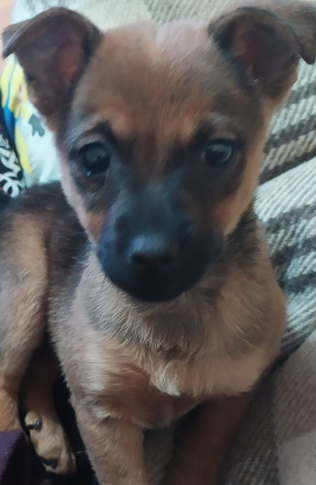

---
# Feel free to add content and custom Front Matter to this file.
# To modify the layout, see https://jekyllrb.com/docs/themes/#overriding-theme-defaults

layout: main
---
<div class="front-container">

    <div class="first-dog">
        <h2 class="first-dog-name">Аз съм Морти...</h2>
        <div class="img-container">
            <a href=""></a></li>
        </div>
        
    </div>

    <div class="second-dog">
        <h2 class="second-dog-name">Аз съм Майки...</h2>
        <div class="img-container">
            <a href=""></a></li>
        </div>
    </div>

   
</div>

